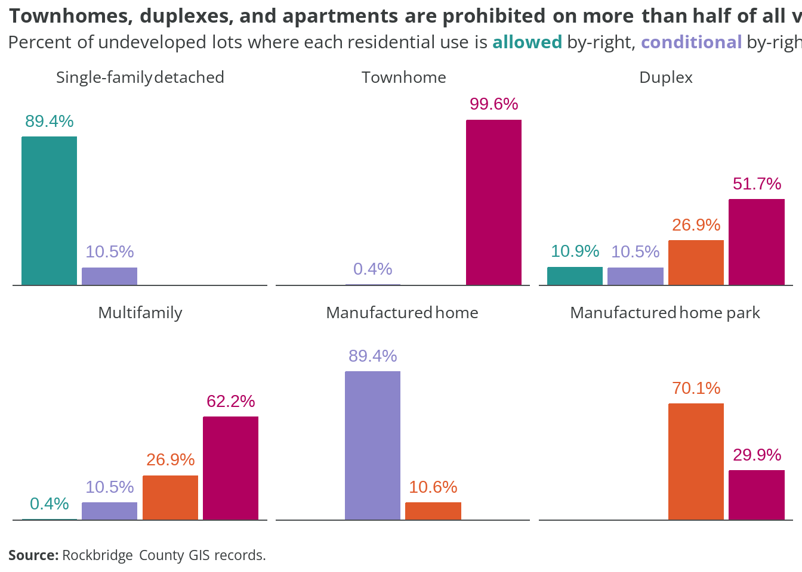

| Zone | Name | Overlay | Type |
|---|---|---|---|
| C-1 | Conservation | No | Nonresidential |
| A-1 | Agricultural and Limited Uses | No | Primarily Residential |
| A-2 | Agricultural and General Uses | No | Primarily Residential |
| A-T | Agricultural Transitional | No | Primarily Residential |
| R-1 | Residential General | No | Primarily Residential |
| R-2 | Residential Mixed | No | Primarily Residential |
| B-1 | General Business | No | Mixed with Residential |
| B-2 | Planned Business | No | Mixed with Residential |
| I-1 | General Industrial | No | Nonresidential |
| FH-1 | Flood Hazard | Yes | Nonresidential |
| Historical Overlay | - | Yes | Mixed with Residential |
| Agricultural/Forestal Overlay | - | Yes | Mixed with Residential |
| TC-O | Tourism Corridor Overlay | Yes | Mixed with Residential |
| Source Water Protection Overlay | - | Yes | Mixed with Residential |
4 Existing zoning
This section examines current residential zoning patterns in each of the three localities. The towns of Glasgow and Goshen are not included.
4.1 Rockbridge County
4.1.1 Zoning districts
Rockbridge County has nine base zoning districts and five overlay districts.
The map below shows the base zoning for each parcel in the county. Parcels with “NA” zoning in the county’s data are excluded. These 575 properties primarily include otherwise undevelopable land, such as the Blue Ridge Parkway.
Of those nine base districts, all but two (C-1 and I-1) allow some form residential uses either by right, conditionally, or via special exemption.
The table below shows the allowances for different residential uses in those seven districts.
| Zone | SF detached | Townhome | Duplex | Multifamily | MH | MHP |
|---|---|---|---|---|---|---|
| A-1 | A | P | P | P | C | P |
| A-2 | A | P | P | P | C | S |
| A-T | A | P | S | S | C | S |
| R-1 | A | P | A | P | C | P |
| R-2 | A | C | A | A | C | P |
| B-1 | C | P | C | C | S | P |
| B-2 | S | P | S | S | S | P |
Allowance key:
- A = Allowed by-right
- C = Conditional (by-right if additional conditions met)
- S = Special exception (permit application and public hearing required)
- P = Prohibited
Residential use definitions:
- SF detached = Single-family home with no walls shared with other dwelling units
- Townhome = Single-family home with at least one wall shared with other dwelling unit
- Duplex = Building with two separate dwelling units
- Multifamily = Building with three or more separate dwelling units
- MH = Manufactured home (built off-site in accordance with federal codes)
- MHP = Manufactured home park (development with three or more manufactured homes on leased lots)
Single-family detached homes are by-right in five of the seven districts. In B-1, they are conditionally permitted by-right if the structure meets the “area and setback requirements of the R-2 District if public water and sewer are available or the R-1 District if on a private drainfield and well or public water” [605.02-04]. This same rule applies to B-2; however, all B-2 developments must be approved via special exemption.
Townhomes are only allowed conditionally in the R-2 district, and prohibited in all other zones. Townhome developments must meet special regulations found in section 709 of the zoning ordinance to be approved by-right.
Duplexes are by-right in R-1 and R-2 and conditional in B-1, where the same area, setback, and utility requirements apply as described for single-family homes above. Duplexes are allowed via special exception in A-T and B-2.
Multifamily developments are by-right only in R-2. In B-1, multifamily is possible only via apartments or condos included as basement or upper-story units included in structures that include other permitted uses. At least 90% of street-level space must be non-residential. Multifamily is possible via special exception in A-T and B-2.
Manufactured homes are allowed in all districts other than B-1 and B-2 if conditions in section 707 are met. That section requires new units be built according to HUD code (no pre-1976 units), placed on permanent foundation, titled as real estate, among other stipulations. Manufactured homes are allowed only via special exception in B-1 and B-2.
Manufactured home parks are prohibited in all districts except for A-2 and A-T, where they are allowed only via special exception. New MHP developments must meet the design and site plan requirements outlined in sections 707.02 through 707.06.
4.1.2 Distribution
Parcels zoned A-2 are the most common (49.5 percent) and comprise over half the county’s land area (52.7 percent). A-1 and A-T properties fill out another quarter of the county. Almost the full remainder of the county’s land is zoned for conservation (C-1), or does not have zoning assigned to it.
While R-1 properties account for 14.4 percent of all parcels, they make up just 1.4 percent of all land. Other zoning districts where homes are allowed (R-2, B-1, and B-2) account for less than one percent of land.
4.1.3 Land use by district
The charts below show how parcels within each zoning district are currently used. Land uses are the same groups described in Table 3.2.

Among agriculturally-zoned parcels, a majority are “vacant” or have a single-family home. However, this does not mean farming or harvesting does not occur on those lots; the county has just not assigned “agricultural” as the primary land use.
Vacant parcels most common within the A-1 or A-T zones, where they comprise 55.6 and 67.3 percent, respectively. In the A-2 district, single-family properties are the most prevalent, at just over 51 percent.

Among the four non-agricultural districts that allow residential uses, single-family homes and vacant properties are still the most common parcel types. Well over half of R-1 properties are single-family homes, and another third vacant. Townhomes and condos make up almost 5 percent of R-1 parcels, despite being nonconforming uses.
No “duplex” land use designation
Duplexes are permitted in R-1 and R-2 by-right; however, the land use codes currently used by the county do not include a standalone duplex designation. According to the latest American Community Survey estimates, there are around 60 2-unit dwellings in the county. It is possible these properties are included in the “Townhouse/condo” land use code.
Townhomes and condos are most common in R-2, where they make up over 12 percent of parcels. However, vacant lots (47.6 percent) and single-family homes (39 percent) are still much more prevalent in that district.
Two in three B-1 parcels are vacant (66.8 percent). The remainder are almost equally either single-family homes or commercial properties. Only 12 parcels are currently zoned B-2. Of those, most are single-family homes.
4.1.4 Development potential
There are 10,312 undeveloped lots in zoning districts that allow residential uses. Together, these parcels total 129,982 acres of land. The chart below shows how the county’s vacant property is distributed by their current zoning district.

Just under half of all vacant parcels are zoned A-2 (43.2 percent), but these account for two-thirds of all undeveloped area. Vacant A-1 lots are the next largest group when measured by area (25.8 percent), but only account for 8.4 percent of the total parcel count. Vacant parcels zoned A-T make up the next largest count (26.9 percent), but together are only 5.2 percent of land area.
Single-family detached homes are the only by-right residential use across these districts. (Manufactured homes are also permitted, but must meet certain conditional criteria.) Most other dwelling types are fully prohibited.
Just about one in all five undeveloped lots are zoned for residential or business, with nearly all either R-1 or B-1. These are even a much smaller share of the total vacant area, comprising about 2.5 percent. These are the only vacant parcels where townhomes and multiple-unit dwellings are possible by-right, conditionally, or via special exception.
The chart below show how the current zoning ordinance allows (or restricts) different housing types as a percent of undeveloped parcels in the county.

Overstated development potential
This analysis only considers the possible residential uses for each parcel, derived from the county’s zoning ordinance. It does not factor in other regulatory requirements, such as minimum lot sizes and setbacks. Road and utility access are also not included variables. Therefore, the share of vacant parcels actually suitable for development is likely much lower than these estimates.
Single-family detached homes are by-right on almost nine in ten empty lots, and are a conditional use on almost all other parcels. Manufactured homes share a similar distribution, but require conditional approval most everywhere.
Duplexes are the next most common residential use allowed across vacant properties, where they are by-right in R-1 or R-1 (10.9 percent), or conditional in B-1 (10.5 percent). Multifamily apartments can be developed by-right on less than half a percent of all currently empty parcels, or conditionally on 10.5 percent. Both duplexes and multifamily homes would require a special exception (and public hearing) on 26.9 percent of vacant properties. These are nearly all zoned A-T.
The zoning ordinance fully prohibits apartments on 62.2 percent of undeveloped lots today, and duplexes on 51.7 percent. Townhomes are effectively banned everywhere.
Challenges to manufactured home park development
In theory, new manufactured home parks are possible via special exception on 70.1 percent of vacant lots. However, the three-acre minimum lot size and other development requirements, along with larger market factors beyond county regulatory issues, make this scenario unlikely.
The maps below show what types of residential uses are allowed across presently vacant properties in the county. Parcels with any existing improvements are excluded.
[finish these maps]
Caption attempt
4.1.5 Analysis
The existing zoning ordinance dictating land use and development in Rockbridge County has not been comprehensively rewritten since 1982. At this time, the County population was 17,856—about 5,000 people less than its population today.
Since 1982, amendments have been made to the zoning code to address cases and uses not originally considered, but the overall form of the zoning code remains unchanged.
[more to add]
Initial recommendations:
- Determine with greater certainty how many A-1, A-2, and A-T properties are actually used for agriculture-related activities
[more to add]